TRMS系统变电站远程监测服务现场安装调试教程
产品适用范围
面向广大工商业企业、公共机构等电力专变客户，通过运行状态监测和异常预警、报警，帮助客户提高变电站运行管理效率，消除人工运维盲区，保障变电站运行安全，降低变电站运行管理成本，实现企业变电站运行管理专业化、智能化、可视化的一项电力服务
功能介绍:
- 监控变电配电系统出线回路和关键设备运行状态，消除人工运维盲区
- 异常状态实时报警，关键设备电流波动监测和预警
- 出线回路和用电设备的用电状态诊断和预警，减少故障发生，保障用电安全，包括功率因数、三相不平衡、电流过流、负荷过载、变压器电压过高等
硬件产品介绍
1. ETP-II型采集器
1) 基本参数
电源： AC220V
采样电压值：400V
可采集路数： 2路
2) 外型尺寸
246mm×70mm×50mm（长×宽×高）
3) 接线端子说明
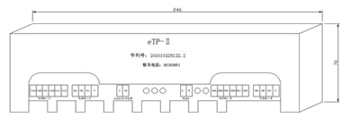
4) 指示灯说明
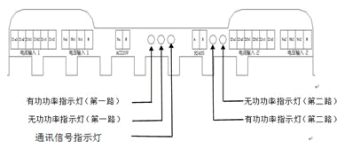
指示灯显示说明：如线路带有功无功负荷则指示灯闪烁，所带负荷越大闪烁频率越快。当采集器刚上电或采集器与上端设备通讯则通讯指示灯亮。
5) 适用范围
| 产品型号 | 序列号 | 适配互感器 | 电流范围 |
|---|---|---|---|
| ZFP-ETP-II | 0202 3013 0001 | KH30 | 0-600A |
| 0202 2511 0001 | KH25 | 0-100A | |
| 0202 1612 0001 | KH16 | 0-5A | |
| 0202 3014 0001 | QY40 | 0-800A |
6) 接线示意图
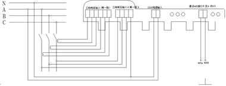
2. 电流互感器
1) 外型尺寸、适用范围
| 型号 | 变比 | 工作电流 | 适用范围 |
|---|---|---|---|
| KH30 | 500A/100mA | 0-600A | IN=600A及以下等级出线回路 |
| KH25 | 100A/40mA | 0-100A | IN=100A及以下等级出线回路 |
| KH16 | 5A/5mA | 0-6A | IN》800A及以上等级出、进线回路 |
| QY40 | 600A/100mA | 0-800A | IN=800A及以下等级出线回路 |
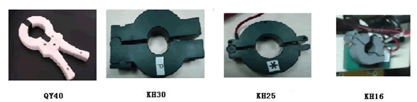
2) 互感器朝向说明
KH25、KH16、QY40互感器有标记面为电流流入方向。KH30互感器侧面有电流流向箭头。
3. ETP-II型汇集器
1) 外型尺寸
250mm×270mm×86mm（长×宽×高）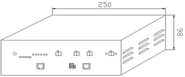
2) 接线端子说明
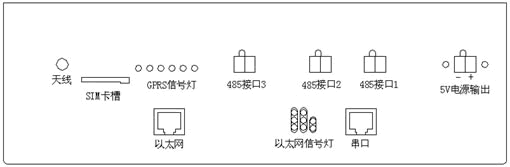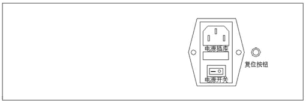
4. 连接电缆
1) 采样电缆
采样电缆由3只电流互感器、3根电压采样线组成。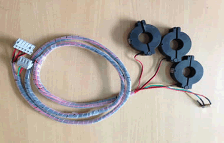
2) 通讯电缆
通讯电缆是采集器和汇集器、采集器和采集器之间的连接通道。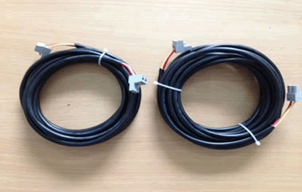
3) 电源电缆
电源电缆是采集器的工作电源线。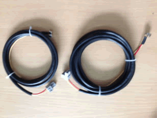
现场安装、调试
进行安装调试工作前的注意事项：
- 必须持有电工证的人员方可进行以下的安装作业
- 所有安装人员在进入现场时必须穿戴好工作服，绝缘鞋
- 必须按要求办理好工作票，并经客户责任人签字确认
1. 采集器安装
1) 将采集器吸附在开关柜侧面
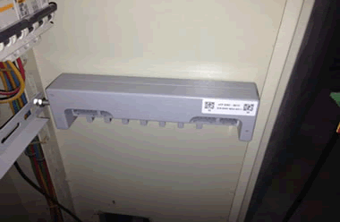
2) 插上电流采集回路插头。
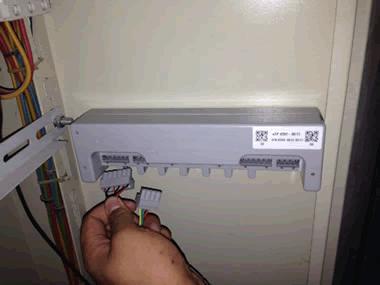
3) 插上电压采集回路插头
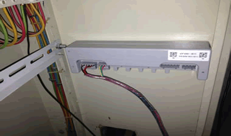
4) 插上工作电源插头
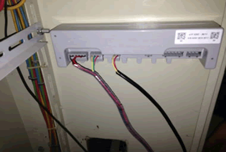
5) 插上通讯线插头
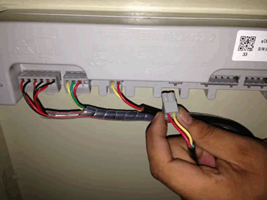
6) 采集器侧一个回路的接线完毕
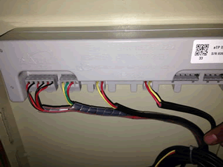
6) 采集器侧一个回路的接线完毕
2. 互感器的安装
1) 将互感器按相序分别套装在出线电缆上（注意互感器的相序标识）
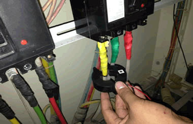
2) 3相3个互感器分别安装到位（注意互感器带*号的为电流流进端）
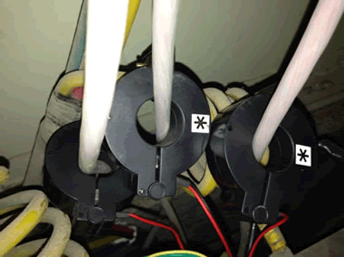
3. 电压线及采集器工作电源的搭取
1) 将电压取样磁钢按相序吸附在开关下桩头螺丝上
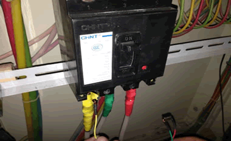
2) 3相3颗磁钢都吸附到位。
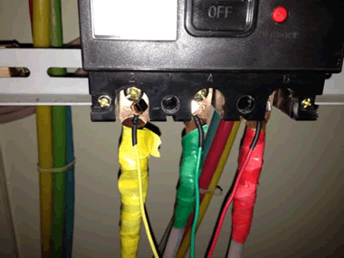
3) 工作电源零线吸附在零排上
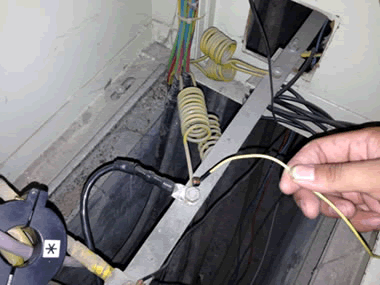
4) 工作电源火线吸附在开关上桩头A相（开关跳闸后确保采集仍在工作状态）
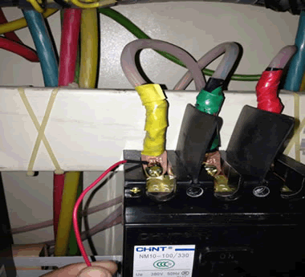
4. 汇集器的安装
1) 汇集器可以吸附或挂装在开关柜内
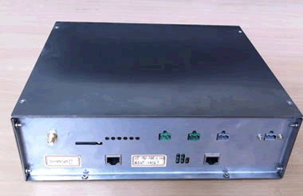
2) 汇集器电源接线
汇集器的工作电源为AC220V，电源可以同采集器工作电源相同从受总开关上桩头搭取
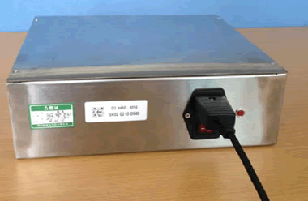汇集器电源接线、天线连接图
3) 汇集器通讯线连接
将“手拉手”连接后的通讯总线插接至汇集器485通讯接口（默认接口为485接口2）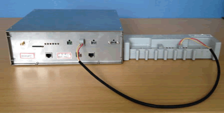
4) 汇集器的天线连接
汇集器天线连接完成后根据现场信号强度选择放置地点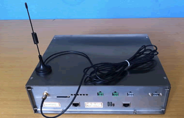
5. 现场调试
用专用调试数据线连接电脑和485总线
注：485总线即手拉手并联连接的通讯线首端或末端
1) 打开e电工——点击“调试工具”。
 /TRMS调试工具界面
/TRMS调试工具界面
2) 点“手机扫描”
3) 手机扫描二维码
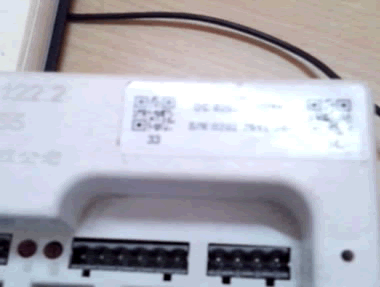4) 点“读取采集器”
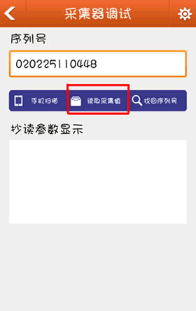
5) 读取采集值
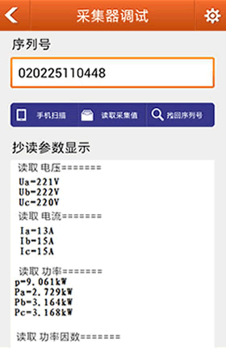
图4 读取采集值界面
6) 核对采集数据
将采集器采集参数和现场仪表的电流、电压等参数进行核对，确认数据一致正确。